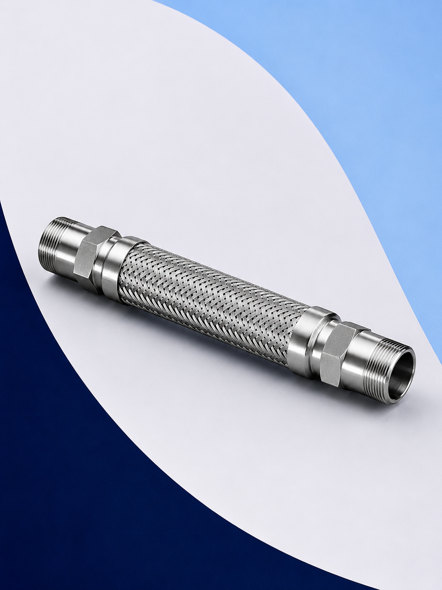

Mangueras Metalicas Flexibles
Mangueras Metálicas Flexibles y Juntas de Expansión para Procesos Industriales
En Defany Industrial suministramos mangueras metálicas flexibles y juntas de expansión diseñadas para responder a las condiciones más exigentes de la industria mexicana.
Nuestras soluciones resuelven los desafíos más frecuentes en instalaciones industriales: conducción de fluidos a alta presión y temperatura, absorción de vibraciones generadas por bombas y compresores, compensación de expansión térmica en tuberías largas, desalineación de equipos durante el montaje y protección de conexiones en sistemas críticos.
Fabricamos sobre especificación técnica, adaptando longitud, diámetro, material y tipo de conexión a los requerimientos precisos de cada proceso.

¿Cuál Solución Necesita su Proceso?
Identifique si su aplicación requiere una manguera metálica flexible o una junta de expansión para dimensionar correctamente la solución.

Mangueras Metálicas Flexibles
La solución cuando el proceso necesita absorber vibraciones o permitir pequeños movimientos entre equipos conectados. Su fuelle de acero inoxidable corrugado y la malla de protección permiten trabajar bajo presión y temperatura sostenida.
- Absorción de vibración de bombas y compresores
- Conexión flexible entre equipos
- Protección de conexiones en calderas
- Pequeños movimientos axiales y angulares
- Sistemas de vapor, agua y aire a presión

Juntas de Expansión
La solución cuando la tubería experimenta variaciones de temperatura significativas que generan expansión y contracción. Las juntas de expansión absorben estos movimientos protegiendo las estructuras, bridas y equipos conectados.
- Compensación de expansión térmica en tuberías largas
- Movimientos axiales, laterales y angulares
- Protección de equipos fijos
- Reducción de cargas sobre soportería
- Sistemas de vapor, agua caliente y gases
¿Por Qué Elegir Soluciones Flexibles?
Las mangueras metálicas flexibles y las juntas de expansión no son simples accesorios: son componentes de ingeniería que determinan la confiabilidad y vida útil de toda la instalación.
Absorben vibraciones
Aíslan la vibración generada por bombas, compresores y equipos rotativos, evitando que se transmita a la tubería y cause fatiga del material.
Reducen esfuerzos mecánicos
Eliminan las cargas axiales y laterales sobre bridas, válvulas y conexiones, extendiendo la vida útil de todos los componentes del sistema.
Protegen bombas y equipos
Al aislar la vibración y los movimientos diferenciales, reducen el desgaste de sellos mecánicos, cojinetes y carcasas de equipos costosos.
Incrementan la vida útil
Un sistema correctamente flexible tiene menores ciclos de fatiga, menor deterioro de juntas y mayor intervalo entre mantenimientos programados.
Compensan expansión térmica
Absorben los movimientos de contracción y dilatación producidos por ciclos térmicos en sistemas de vapor y fluidos calientes.
Reducen mantenimiento
Menor número de fugas, menos fallas en sellos y conexiones, y menor desgaste general traducen en reducción directa del costo de mantenimiento.
Nuestro Portafolio
Fabricamos y suministramos cuatro líneas principales de soluciones flexibles, adaptadas a las necesidades técnicas de cada proceso y sector industrial.

Mangueras con Niples
Mangueras corrugadas de acero inoxidable con terminación en niples roscados NPT o BSP. La opción más versátil para conexiones en sistemas de vapor, agua, aire y fluidos industriales generales. Disponibles con y sin malla de protección.
Mangueras Bridadas
Mangueras corrugadas con terminaciones bridadas ANSI 150# o 300#. Diseñadas para sistemas de alta presión, grandes diámetros y donde se requiere una conexión de máxima seguridad y hermeticidad. Estándar en plantas petroquímicas y de energía.
Mangueras Especiales
Soluciones a medida para aplicaciones que requieren materiales específicos, configuraciones no estándar o certificaciones especiales. Fabricamos con fuelle en AISI 304, 316, Inconel y otras aleaciones, con terminaciones soldadas, JIC o adaptadas al proceso.
Juntas de Expansión
Compensadores metálicos y de elastómero para absorber movimientos axiales, laterales y angulares en sistemas de tuberías. Disponibles en versión axial, universal (cardán) y de alta absorción para sistemas críticos. Diseño según EJMA y normas internacionales.
Aplicaciones Industriales
Nuestras mangueras metálicas y juntas de expansión se utilizan en prácticamente todos los sectores de la industria de proceso en México.
Mangueras para vapor, agua caliente y fluidos de proceso en sistemas de secado, prensas y digestores.
Mangueras sanitarias en acero inoxidable 316 para conducción de fluidos en plantas de proceso de alimentos.
Mangueras en aleaciones especiales para fluidos corrosivos, ácidos, solventes y reactivos a presión.
Mangueras y juntas para sistemas de vapor saturado y sobrecalentado en calderas y plantas de cogeneración.
Mangueras y juntas para conexión de chillers, torres de enfriamiento, fan coils y sistemas de agua helada.
Mangueras de alta presión para conexión flexible en centrales hidráulicas, prensas y actuadores.
Mangueras para absorber la vibración generada por compresores de tornillo, de pistón y centrífugos.
Conexiones flexibles en succión y descarga de bombas centrífugas, de pistón y de diafragma.
Mangueras metálicas para vapor en conexiones de instrumentación, purgas y servicios auxiliares de calderas.
Juntas de expansión y mangueras para compensar la dilatación diferencial entre carcasa y haz tubular.
Materiales Disponibles
Seleccionamos el material correcto según el fluido, la temperatura, la presión y las condiciones ambientales del proceso.
| Material | Temp. máx. | Aplicación principal |
|---|---|---|
| Acero Inoxidable 304 | 600°C | Vapor, agua, aire. Uso general industrial |
| Acero Inoxidable 316 | 600°C | Fluidos corrosivos, alimentos, farmacia, agua de mar |
| PTFE (recubrimiento) | 260°C | Ácidos, álcalis, solventes, fluidos agresivos |
| Acero al Carbón | 450°C | Vapor, gases, aceites industriales |
| Inconel / Hastelloy | 1100°C | Temperaturas extremas, medios altamente corrosivos |
| Conexiones especiales | — | JIC, soldables, bridas especiales, a especificación |
Tipos de Conexiones
Fabricamos mangueras con cualquier tipo de terminación según el estándar o la instalación existente del proceso.
ANSI 150# y 300# en acero inoxidable o carbón. La conexión de mayor seguridad para altas presiones y grandes diámetros.
Rosca macho o hembra en 1/4", 3/8", 1/2", 3/4", 1" y superiores. Conexión rápida y económica para sistemas moderados.
Terminación biselada para soldadura de tope. Máxima integridad estructural para sistemas de alta presión y temperatura.
Terminaciones con cono de 37° para sistemas hidráulicos e industriales de alta presión donde se requiere conexión sin fugas.
Cualquier terminación a especificación del cliente: victaulic, DIN, BSPT, sanitary ferrule (clamp), o adaptadas a instalación existente.
Manguera Flexible vs Junta de Expansión
Use esta tabla para identificar con precisión cuál solución se adapta mejor a su aplicación antes de cotizar.
| Característica | Manguera Flexible | Junta de Expansión |
|---|---|---|
| Aplicación principal | Conexión entre equipos con vibración | Tuberías largas con expansión térmica |
| Tipo de movimiento | Pequeños movimientos multidireccionales | Axial, lateral o angular de mayor recorrido |
| Instalación | Sencilla, en cualquier posición | Requiere guías y soportes calculados |
| Presión típica | Hasta 150 PSI estándar (superior en especial) | Hasta los límites del sistema de tuberías |
| Temperatura | Hasta 600°C según material | Hasta 600°C según material y diseño |
| Costo relativo | Menor | Mayor (diseño de ingeniería) |
| Uso típico | Bombas, compresores, equipos rotativos | Líneas de vapor, termoeléctricas, refinerías |
¿Tiene dudas sobre cuál aplica a su proceso?
Consultar con un asesor¿Cómo Seleccionar Correctamente?
Siga estos seis pasos para definir la especificación técnica completa antes de solicitar su cotización.
Identifique el fluido: vapor, agua, aire, aceite, ácido u otro. Esto define el material del fuelle y las terminaciones.
Temperatura máxima de operación en °C o °F. Determina el material, el diseño del fuelle y posibles accesorios de aislamiento.
Presión máxima de operación en PSI, bar o kg/cm². Determina el espesor de pared del fuelle y el tipo de malla protectora.
Tipo de movimiento esperado: axial, lateral, angular o combinado. Define la longitud y diseño del elemento flexible.
Tipo de terminación requerida: niple NPT, brida ANSI, soldable, JIC u otra. Incluya el diámetro nominal de la tubería.
Envíe estos datos a nuestro equipo. Recibirá una propuesta técnica con el producto correcto para su aplicación.
Sectores donde Trabajamos
Nuestras soluciones de conducción flexible están presentes en los principales sectores de la industria nacional e internacional.
Preguntas Frecuentes
Respuestas a las dudas más comunes sobre selección, instalación y mantenimiento de mangueras metálicas y juntas de expansión.
La manguera corrugada es el fuelle metálico por sí solo: ligero, flexible y económico para aplicaciones de baja presión. La manguera trenzada agrega una malla de alambres de acero inoxidable tejida sobre el fuelle corrugado, lo que aumenta significativamente la resistencia a la presión interna y protege el fuelle ante daño físico externo. En aplicaciones de proceso industrial se recomienda siempre la versión con malla.
La longitud depende del propósito. Para absorción de vibración en bombas se recomienda una manguera con al menos un diámetro de longitud activa. Para compensación de movimiento axial, la longitud debe calcularse en función del movimiento esperado y el ángulo máximo de deflexión. Nuestro equipo técnico puede auxiliarle en este cálculo con base en los datos de su instalación.
Sí. En instalaciones horizontales, se recomienda soporte en ambos extremos de la manguera para evitar pandeo por el peso del fluido y de la propia manguera. En instalaciones verticales, el soporte en el extremo inferior es suficiente. Las mangueras NO deben tensarse ni torcerse durante la instalación: deben quedar en su posición natural sin carga mecánica adicional.
El movimiento axial admisible depende del diámetro, la longitud y el material del fuelle. Como referencia, una manguera estándar de 1" puede absorber entre ±3 mm y ±6 mm de movimiento axial según la longitud activa. Para movimientos mayores se recomiendan juntas de expansión, que están diseñadas específicamente para recorridos de decenas de milímetros en sistemas de tuberías.
Una junta de expansión axial absorbe movimiento en una sola dirección: el eje longitudinal de la tubería. La junta universal (también llamada cardán o de doble fuelle) tiene dos fuelles conectados por un tramo intermedio, lo que le permite absorber movimientos laterales y angulares además del axial. La junta universal se usa cuando la tubería sufre movimientos en múltiples direcciones o cuando no es posible instalar guías de restricción.
Sí, con las especificaciones correctas. Las mangueras metálicas para vapor de alta presión deben tener fuelle en acero inoxidable AISI 321 o 316Ti, malla doble de protección, y terminaciones bridadas certificadas. La presión de trabajo admisible depende del diámetro y la temperatura. Nuestro equipo puede seleccionar la manguera correcta proporcionando presión, temperatura, diámetro y longitud requerida.
Sí, de manera general. Las juntas de expansión axiales requieren un punto fijo (ancla) en cada extremo del tramo de tubería donde se instalan, además de guías intermedias que restringen el movimiento a la dirección axial. Sin una sujeción correcta, el fuelle puede pandear o fallar por columpio. Nuestro equipo puede orientarle en el diseño de la soportería necesaria.
La vida útil depende de la correcta selección, instalación y las condiciones de operación. Una manguera bien seleccionada e instalada correctamente puede durar de 5 a 15 años en aplicaciones de proceso continuo. Los principales factores que reducen la vida útil son: vibración excesiva fuera del rango de diseño, ciclos de presión frecuentes, instalación incorrecta con torsión o tensión, y fluidos corrosivos sin el material adecuado.
Sí. Fabricamos mangueras sobre especificación técnica, adaptando longitud, diámetro, material del fuelle, tipo y tamaño de terminaciones, y número de capas de malla. Si cuenta con un plano o una muestra de la pieza a sustituir, podemos fabricar el reemplazo exacto. Contacte a nuestro equipo con los datos de su proceso para recibir la propuesta técnica y el tiempo de fabricación.
Proporcione: tipo de producto (manguera/junta), fluido, temperatura máxima, presión máxima, diámetro nominal, longitud requerida, tipo de conexión (niple/brida/soldable), material preferido y cantidad. Puede enviarnos esta información a cotizaciones@defany.com.mx, por WhatsApp al 55 8531 8323, o completar el formulario de contacto en esta página. Respondemos cotizaciones en el menor tiempo posible.
¿Necesita Ayuda para Seleccionar la Solución Adecuada?
Nuestro equipo de ingeniería puede auxiliarle en la selección, dimensionamiento y especificación técnica de mangueras metálicas y juntas de expansión para su proceso.